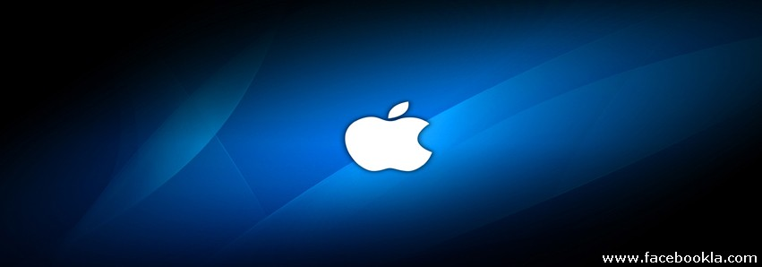
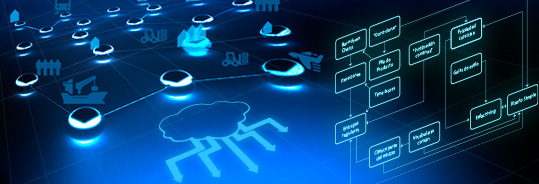
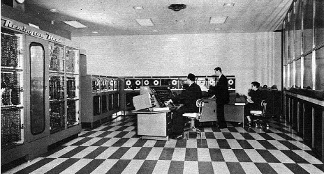

- 
- 
-

★Primera generación (1940-1952)★
Estaban construidas con electrónica de válvulas. Se programaban en lenguaje de la máquina. Un programa es un conjunto de instrucciones para que la máquina efectue alguna tarea, y el lenguaje más simple en el que puede especificarse un programa se llama lenguaje de máquina (porque el programa debe escribirse mediante algún conjunto de códigos binarios). La primera generación de computadoras y sus antecesores, se describen en la siguiente lista de los principales modelos de que constó:
♦ 1946 ENIAC. Primera computadora digital electrónica en la historia.
♦ 1949 EDVAC. Segunda computadora programable. También fue un prototipo de laboratorio, pero ya incluía en su diseño las ideas centrales que conforman las computadoras actuales.
♦ 1951 UNIVAC I. Primera computadora comercial. Los doctores Mauchly y Eckert fundaron la compañía Universal Computer (Univac), y su primer producto fue esta máquina.
